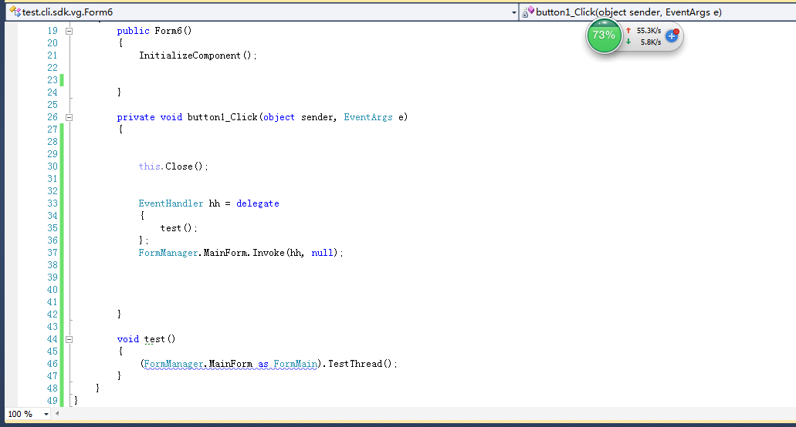

##Myeclipse常用快捷键标记
1：Ctrl+H 搜索整个项目
2：Ctrl+Shift+O 导包
3：Alt+Shift+S 快捷实现接口，get/set方法，构造函数等
4：Alt+Shift+J 快速注释（需要选中函数或者属性名称）
5:Alt+← 或者 Alt+→ 到上一步或者下一步位置
6 显示行号 windows->preferences->general->editors->Text Editer->show line numbers
##Myeclipse常用快捷键标记
1：Ctrl+H 搜索整个项目
2：Ctrl+Shift+O 导包
3：Alt+Shift+S 快捷实现接口，get/set方法，构造函数等
4：Alt+Shift+J 快速注释（需要选中函数或者属性名称）
5:Alt+← 或者 Alt+→ 到上一步或者下一步位置
6 显示行号 windows->preferences->general->editors->Text Editer->show line numbers
##1：在官网下载https://dev.mysql.com/downloads/mysql/（如图）

##2：解压之后，首先在解决的当前目录下添加my.ini文件(内容如下)
[client]
port=3306
default-character-set=utf8
[mysqld]
# 设置为MYSQL的安装目录
basedir=E:\mysql-5.7.18-winx64
# 设置为MYSQL的数据目录
datadir=E:\mysql-5.7.18-winx64\data
port=3306
character_set_server=utf8
sql_mode=NO_ENGINE_SUBSTITUTION,NO_AUTO_CREATE_USER
#开启查询缓存
explicit_defaults_for_timestamp=true
mysqld -install（注册mysql服务）
mysqld --initilize --user=mysql --datadir=data(初始化mysql的data,密码等信息 初始化root的密码为空)
net start mysql(启动mysql服务)
mysqladmin -u root -p password(设置新密码)
##4: 常见问题
(1) mysqld -install 结果Install/Remove of the Service Denied!
解决方案：进入 C:\Window\System32 找到CMD.EXE 右键选择 以管理员身份 进行，再进入相应目录执行命令，一切就OK了。
(2)执行报错 应用程序无法正常启动（0x000007b） 如图

解决方案：可以使用如何使用DirectX修复工具进行修复
详细可查看 http://jingyan.baidu.com/article/ed2a5d1f57a1ab09f6be17d8.html
(3) 部署java web项目到服务器，老是提示“java.sql.SQLException: No suitable driver found for jdbc:mysql”
1.查了好久发现是,java web项目虽然成功部署了，但是mysql-connector-java-3.1.14-bin.jar并没有复制到
“webapps\WeixinCoreServlet\WEB-INF\lib ”该目录下，导包的方式是bulid_path那样导的，虽然导入成功了，
但是并不复制，必须手动刷新（右键项目->刷新(F5)）myelipse 2014下发生的
（4）执行查询报错 Host 'XXX' is not allowed to connect to this MySQL server
原因：未授权远程账号
解决方案：
1.在 Windows 主机中点击开始菜单，运行，输入“cmd”，进入控制台，然后cd 进入MySQL 的 bin 目录下，然后输入下面的命令。
mysql -uroot -p123456 (123456 为 root 用户的密码。)
2.创建远程登陆用户并授权
grant all PRIVILEGES on test_db.* to root@'192.168.1.101' identified by '123456';
引用：http://www.cnblogs.com/zhangzhu/archive/2013/08/22/3274831.html
(5)mysql 运行时报错（如下）
Establishing SSL connection without server's identity verification is not recommended.
You need either to explicitly disable SSL by setting useSSL=false, or set useSSL=true and provide truststore for server certificate verification.
原因分析：mysql高版本需要指明是否安全连接
解决方案：（mysql的连接串改为如下配置）
“ jbbcLmysql://localhost:3306/weixin?characterEncoding=utf8&useSSL=true ”
查了好久，发现并不是网上说的返回值为空的为题，而是web.xml中
servelt的映射路径写错了。。如图所示

1：下载ngrok （https://dashboard.ngrok.com）
2: 注册获取 （authtoken)
3: 运行ngrok.exe
4: 执行 ngrok authtoken 5x5JMF92LuLTfXaT8YA7N_6mMqPvzAKyircey21JHW2(注册生成的authtoken)
5: 执行 ngrok http 8080
如图 可生成如此结果

此时在微信公众平台进行填入上面红色框内的内容，进行重新映射

#简单描述
KeyedList：
同时实现IDictionary和IList接口的集合。
带有索引的List使用上会比较方便，可以通过Key来索引Value。
同时内部是线性存储的，可以保证顺序，可以使用下标访问数据。
内部使用Dictionary来存储Key到Value的映射，
List存储KeyValuePair。有很大的冗余，可以参考（小规模的数据用着还是比较方便的）
代码：
[Serializable]
[Obsolete("未完善，有冗余")]
public sealed class KeyedList<TKey, TValue> :
IDictionary<TKey, TValue>,
IList<KeyValuePair<TKey, TValue>>
{
private readonly Dictionary<TKey, TValue> _dict = new Dictionary<TKey, TValue>();
private readonly List<KeyValuePair<TKey, TValue>> _list = new List<KeyValuePair<TKey, TValue>>();
/// <summary>
/// Returns false.
/// </summary>
public bool IsReadOnly
{
get { return false; }
}
/// <summary>
/// Returns the number of entries in the KeyedList.
/// </summary>
public int Count
{
get { return _list.Count; }
}
/// <summary>
/// Get/Set the value at the specified index.
/// </summary>
/// <param name="index">The index.</param>
/// <returns>The value.</returns>
public KeyValuePair<TKey, TValue> this[int index]
{
get
{
if (index < 0 || index >= Count)
{
throw new ArgumentOutOfRangeException("index");
}
return _list[index];
}
set
{
if (index < 0 || index >= Count)
{
throw new ArgumentOutOfRangeException("index");
}
_list[index] = value;
_dict[value.Key] = value.Value;
}
}
/// <summary>
/// Get/Set the value associated with the specified key.
/// </summary>
/// <param name="key">The key.</param>
/// <returns>The associated value.</returns>
public TValue this[TKey key]
{
get { return _dict[key]; }
set
{
if (_dict.ContainsKey(key))
{
_dict[key] = value;
_list[IndexOf(key)] = new KeyValuePair<TKey, TValue>(key, value);
}
else
{
Add(key, value);
}
}
}
/// <summary>
/// Get an unordered list of keys.
/// This collection refers back to the keys in the original Dictionary.
/// </summary>
public ICollection<TKey> Keys
{
get { return _dict.Keys; }
}
/// <summary>
/// Get an unordered list of values.
/// This collection refers back to the values in the original Dictionary.
/// </summary>
public ICollection<TValue> Values
{
get { return _dict.Values; }
}
/// <summary>
/// Get the ordered list of keys.
/// This is a copy of the keys in the original Dictionary.
/// </summary>
public List<TKey> OrderedKeys
{
get
{
List<TKey> retList = new List<TKey>();
foreach (KeyValuePair<TKey, TValue> kvp in _list)
{
retList.Add(kvp.Key);
}
return retList;
}
}
/// <summary>
/// Get the ordered list of values.
/// This is a copy of the values in the original Dictionary.
/// </summary>
public List<TValue> OrderedValues
{
get
{
List<TValue> retList = new List<TValue>();
foreach (KeyValuePair<TKey, TValue> kvp in _list)
{
retList.Add(kvp.Value);
}
return retList;
}
}
/// <summary>
/// Returns the key at the specified index.
/// </summary>
/// <param name="idx">The index.</param>
/// <returns>The key at the index.</returns>
public TKey GetKey(int idx)
{
if (idx < 0 || idx >= Count)
{
throw new ArgumentOutOfRangeException("index");
}
return _list[idx].Key;
}
/// <summary>
/// Returns the value at the specified index.
/// </summary>
/// <param name="idx">The index.</param>
/// <returns>The value at the index.</returns>
public TValue GetValue(int idx)
{
if (idx < 0 || idx >= Count)
{
throw new ArgumentOutOfRangeException("index");
}
return _list[idx].Value;
}
/// <summary>
/// Get the index of a particular key.
/// </summary>
/// <param name="key">The key to find the index of.</param>
/// <returns>The index of the key, or -1 if not found.</returns>
public int IndexOf(TKey key)
{
int ret = -1;
for (int i = 0; i < _list.Count; i++)
{
if (_list[i].Key.Equals(key))
{
ret = i;
break;
}
}
return ret;
}
/// <summary>
/// Given the key-value pair, find the index.
/// </summary>
/// <param name="kvp">The key-value pair.</param>
/// <returns>The index, or -1 if not found.</returns>
public int IndexOf(KeyValuePair<TKey, TValue> kvp)
{
return IndexOf(kvp.Key);
}
/// <summary>
/// Gets the Dictionary class backing the KeyedList.
/// </summary>
public Dictionary<TKey, TValue> ObjectTable
{
get { return _dict; }
}
/// <summary>
/// Clears all entries in the KeyedList.
/// </summary>
public void Clear()
{
_dict.Clear();
_list.Clear();
}
/// <summary>
/// Test if the KeyedList contains the key.
/// </summary>
/// <param name="key">The key.</param>
/// <returns>True if the key is found.</returns>
public bool ContainsKey(TKey key)
{
return _dict.ContainsKey(key);
}
/// <summary>
/// Test if the KeyedList contains the key in the key-value pair.
/// </summary>
/// <param name="kvp">The key-value pair.</param>
/// <returns>True if the key is found.</returns>
public bool Contains(KeyValuePair<TKey, TValue> kvp)
{
return _dict.ContainsKey(kvp.Key);
}
/// <summary>
/// Adds a key-value pair to the KeyedList.
/// </summary>
/// <param name="key">The key.</param>
/// <param name="value">The associated value.</param>
public void Add(TKey key, TValue value)
{
_dict.Add(key, value);
_list.Add(new KeyValuePair<TKey, TValue>(key, value));
}
/// <summary>
/// Adds a key-value pair to the KeyedList.
/// </summary>
/// <param name="kvp">The KeyValuePair instance.</param>
public void Add(KeyValuePair<TKey, TValue> kvp)
{
Add(kvp.Key, kvp.Value);
}
/// <summary>
/// Copy the entire key-value pairs to the KeyValuePair array, starting
/// at the specified index of the target array. The array is populated
/// as an ordered list.
/// </summary>
/// <param name="kvpa">The KeyValuePair array.</param>
/// <param name="idx">The position to start the copy.</param>
public void CopyTo(KeyValuePair<TKey, TValue>[] kvpa, int idx)
{
_list.CopyTo(kvpa, idx);
}
/// <summary>
/// Insert the key-value at the specified index.
/// </summary>
/// <param name="idx">The zero-based insert point.</param>
/// <param name="key">The key.</param>
/// <param name="value">The value.</param>
public void Insert(int idx, TKey key, TValue value)
{
if ((idx < 0) || (idx > Count))
{
throw new ArgumentOutOfRangeException("index");
}
_dict.Add(key, value);
_list.Insert(idx, new KeyValuePair<TKey, TValue>(key, value));
}
/// <summary>
/// Insert the key-value pair at the specified index location.
/// </summary>
/// <param name="idx">The key.</param>
/// <param name="kvp">The value.</param>
public void Insert(int idx, KeyValuePair<TKey, TValue> kvp)
{
if ((idx < 0) || (idx > Count))
{
throw new ArgumentOutOfRangeException("index");
}
_dict.Add(kvp.Key, kvp.Value);
_list.Insert(idx, kvp);
}
/// <summary>
/// Remove the entry.
/// </summary>
/// <param name="key">The key identifying the key-value pair.</param>
/// <returns>True if removed.</returns>
public bool Remove(TKey key)
{
bool found = _dict.Remove(key);
if (found)
{
_list.RemoveAt(IndexOf(key));
}
return found;
}
/// <summary>
/// Remove the key in the specified KeyValuePair instance. The Value
/// property is ignored.
/// </summary>
/// <param name="kvp">The key-value identifying the entry.</param>
/// <returns>True if removed.</returns>
public bool Remove(KeyValuePair<TKey, TValue> kvp)
{
return Remove(kvp.Key);
}
/// <summary>
/// Remove the entry at the specified index.
/// </summary>
/// <param name="idx">The index to the entry to be removed.</param>
public void RemoveAt(int idx)
{
if ((idx < 0) || (idx >= Count))
{
throw new ArgumentOutOfRangeException("index");
}
_dict.Remove(_list[idx].Key);
_list.RemoveAt(idx);
}
/// <summary>
/// Attempt to get the value, given the key, without throwing an exception if not found.
/// </summary>
/// <param name="key">The key indentifying the entry.</param>
/// <param name="val">The value, if found.</param>
/// <returns>True if found.</returns>
public bool TryGetValue(TKey key, out TValue val)
{
return _dict.TryGetValue(key, out val);
}
/// <summary>
/// Returns an ordered System.Collections KeyValuePair objects.
/// </summary>
IEnumerator IEnumerable.GetEnumerator()
{
return _list.GetEnumerator();
}
/// <summary>
/// Returns an ordered KeyValuePair enumerator.
/// </summary>
IEnumerator<KeyValuePair<TKey, TValue>> IEnumerable<KeyValuePair<TKey, TValue>>.GetEnumerator()
{
return _list.GetEnumerator();
}
}
#测量某个点是否在不规则路径上
bool isExist=false;
var path = (GraphicsPath)_path.Clone();
Matrix matrix = new Matrix();
matrix.Translate(this.Location.X, this.Location.Y);
path.Transform(matrix);
using (var pen = new Pen(Color.FromArgb(0, 153, 229), 6))
{
path.Widen(pen);
}
if (path.IsVisible(pt))
{
isExist = true;
}
通过以上4步便可以知道某个点是不是在不规则路径上
##
GraphicsPath path = new GraphicsPath();
// 指示由矩形和由路径构成的图形形状的内部。无法继承此类。
Region myRegion = new Region();
myGraphicsPath.Reset();
Point inputpoint1 = new Point(inputx1, inputy1);
Point inputpoint2 = new Point(inputx2, inputy2);
myGraphicsPath.AddPolygon(inputpoint1);
myGraphicsPath.AddPolygon(inputpoint2);
myRegion.MakeEmpty();
myRegion.Union(myGraphicsPath);
//返回判断点是否在不规则路径中
bool result= myRegion.IsVisible(inputponint);
MSDN的解释
在拥有此控件的基础窗口句柄的线程上执行指定的委托
自我理解
（1）同步的，必须得等委托内的代码执行完成之后才能执行
在创建控件的基础句柄所在线程上异步执行指定委托。
自我理解
（1）异步的，不一定非得等委托内的代码运行结束才执行

如图所示，创建一个父窗口，在父窗口中点击按钮弹出一个新的子窗口Form6;
在子窗口添加按钮点击的时候执行关闭操作（this.Close），同时用根窗口所在的Form弹出另一个Form;
如果使用Invoke会阻止this.Close的执行；
如果使用BeginInvoke的话则不会；
##多线程场景
###1：Form关闭的时候回到主线程去弹窗（这有这样才可以）
EventHandler actionDelegate = delegate
{
_signInAlertForm.Close();
};
mainTreadForm.BeginInvoke(actionDelegate, "");//主线程对应的Form
}
###2：计时器结束的时候想去关掉Form,但是计时器会单独新启动一个线程，此时需要回到创建该控件的线程去执行某个操作(测试这两种都可以)
EventHandler actionDelegate = delegate
{
_signInAlertForm.Hide();
};
this._signInAlertForm.BeginInvoke(actionDelegate, "");
this._signInAlertForm.Invoke(actionDelegate, "");
}
在解决方案上右键-》配置管理器：如图

在此处可以配置F5调试运行的时候，是否生成某个项目；
平台（是相对于整个解决方案来说的）
1.整个解决生成的时候默认只生成当前平台下的项目(如图)

2.当前也可以在AnyCpu下生成x86的项目（不推荐，编译时会有好多提醒）
3.当前项目-》属性-》生成–》平台–》只有一个可选项时，可以在解决方案右键-》配置管理器（添加新平台）如图

目标平台（是指你的程序可以在那个平台上运行）
1.如果在x86生成(程序可以在32位机以及64位上运行)，之所以这样，是因为windows平台的向下兼容性；
2.x64(程序可以在32位机和64位机上运行)
3.anycpu(程序可以在32位机器和64机器上运行)
win32程序是message based,event driven 。也就是说 win32程序的运行是依靠外部不断发生的事件来驱动的,也就是说，程序不断等待（类似于有一个while循环）,等待任何可能的进入，然后做判断，在做适当的处理。因此win32程序只需要做好如下几件事情就可以了：
int main(int args,char *argv[],char *envp[])
int CALLBACK WinMain(_in HINSTANCE hInstance,_in HINSTANCE hPrevInstance,
_in LPSTR lpCmdLine,_in int nCmdShow)
相同点：方法的定义和调用都必须显示使用ref、out关键字。都会导致参数按引用传递。
不同点：传递给ref关键字的参数必须赋初始值，而out不用。out关键字会清空变量，即使变量已经赋值也不行，退出函数时所有out引用个变量都要赋值。
static void Main(String []args)
{
int age = 10;
RefAge(ref age);
Console.WriteLine("我现在的年龄是{0}",age);
Console.ReadKey();
}
/// <summary>
/// 得到当前年龄
/// </summary>
/// <param name="age"></param>
static void RefAge( ref int age)
{
age += 5;
}

/// <summary>
/// 采用Out关键字根据当前年龄计算上一年的年龄和下一年的年龄
/// </summary>
/// <param name="age"></param>
/// <param name="lastYearAge"></param>
/// <param name="nextYearAge"></param>
static void OutAge(int age,out int lastYearAge,out int nextYearAge)
{
lastYearAge = age - 1;
nextYearAge = age + 1;
}
static void Main(String []args)
{
int age = 10;
// RefAge(ref age);
int lastYearAge;
int nextYearAge;
OutAge(age, out lastYearAge,out nextYearAge);
Console.WriteLine("我现在的年龄是{0}",age);
Console.WriteLine("我明年的年龄是{0}", nextYearAge);
Console.WriteLine("我去年的年龄是{0}", lastYearAge);
Console.ReadKey();
}

hexo 写博客 ，标题title部分必须位于md文件的最上方，否则会报一些莫名其妙的错误。
哈哈哈(“哈哈哈“)
12342343
这个是一个引用
This is an example inline link.
This link has no title attribute.
我经常去的几个网站百度、Leanote以及自己的博客
Leanote 笔记是一个不错的网站。
See my About page for details
跳转到注意事项
Markdown
: 轻量级文本标记语言，可以转换成html，pdf等格式（左侧有一个可见的冒号和四个不可见的空格）
代码块 2
: 这是代码块的定义（左侧有一个可见的冒号和四个不可见的空格）
代码块（左侧有八个不可见的空格）
阅读的方法:
打开书本。
打开电灯。
<代码写在这>
##32343
使用 Markdown^1可以效率的书写文档, 直接转换成 HTML[^2] , 你可以使用 Leanote^Le 编辑器进行书写。
[^2]:HyperText Markup Language 超文本标记语言


| Tables | Are | Cool |
|---|---|---|
| col 3 is | right-aligned | $1600 |
| col 2 is | centered | $12 |
| zebra stripes | are neat | $1 |
MessageBox.Show("单行代码");
C语言里的函数 scanf() 怎么使用？
缩进 4 个空格或是 1 个制表符
一个代码区块会一直持续到没有缩进的那一行（或是文件结尾）。
#include <stdio.h>
int main(void)
{
printf("Hello world\n");
}
12345
#include <stdio.h>int main(void){ printf("Hello world\n");}
| 值班人员 | 星期一 | 星期二 | 星期三 |
|---|---|---|---|
| 李强 | 张明 | 王平 |